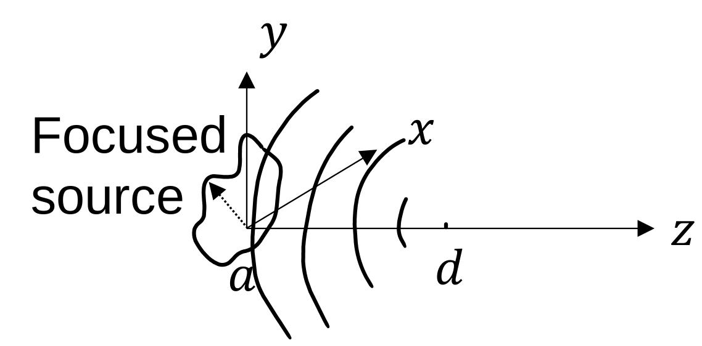
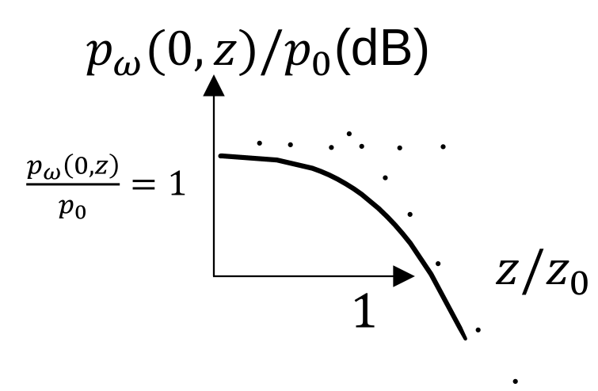
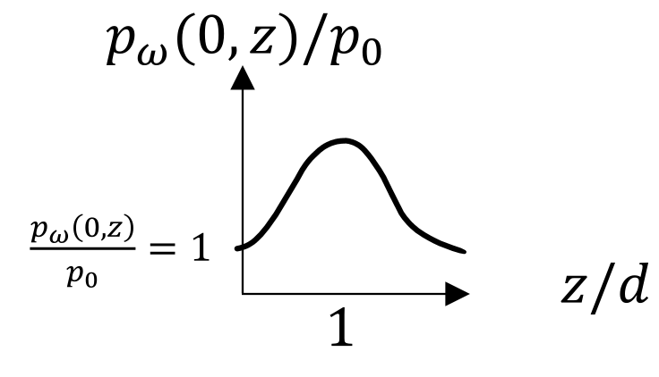
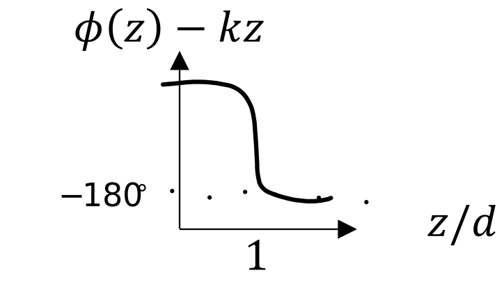
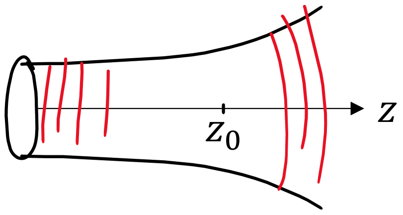

In choosing a theory, one should pay attention to simplicity in hypotheses only. Simplicity in computation can be of no weight in the balance of probabilities. Nature is not embarrassed by difficulties of analysis. She avoids complication only in means. Nature seems to have proposed to do much with little: it is a principle that the development of physics constantly supports by new evidence.
The study of focused sources motivates the Fresnel (also called "paraxial" or "near-field") approximation. The Fresnel approximation is not limited to focused sources, however, and it allows for analytical ease in the study of general diffraction phenomena. Neither is the Fresnel approximation limited in \(z\): indeed, a far-field approximation of the Fresnel approximation can be taken.
Contents:
Consider a spherical wave converging at \(z = d >0\). The pressure field is then \begin{align*} p_\omega (x,y,z) &= A \frac{e^{-ikR}}{R}\\ &= A \frac{e^{ik\sqrt{x^2 + y^2 + (d-z)^2}}}{\sqrt{x^2 + y^2 + (d-z)^2}}\,, \end{align*} where the dimensions of \(A\) are pressure \(\times\) distance. At \(z = 0\), the pressure field is \begin{align}\label{pressure at 0}\tag{1} p_\omega (x,y,0) &= A \frac{e^{-ik\sqrt{x^2 + y^2 + d^2}}}{\sqrt{x^2 + y^2 + d^2}} \,. \end{align} In the absence of diffraction (ray theory), any finite source at \(z=0\) with the above phasing will focus at \((x,y,z) = (0,0,d)\):

Let us assume that \(p_0(x,y)\) or \(u_0(x,y)\sim 0\) for \(x^2 +y^2 \geq a^2\), where \(a\) is the characteristic source radius, and that \(a^2 \ll d\). This is to say that the so-called \(f\)-number: \(N = d/2a \sim 1/2\alpha\) so \(N^2 \gg 1\).
The phase in Eq. \eqref{pressure at 0} can be approximated by \begin{align*} -ik\sqrt{x^2 + y^2 + d^2} &= -ikd \bigg(1 + \frac{x^2 + y^2}{d^2}\bigg)^{1/2}\\ &= -ikd + ik \frac{x^2 + y^2}{2d} + \Order(ka^2/d^3)\,. \end{align*} Meanwhile, the amplitude is approximated as \begin{align*} \frac{A}{\sqrt{x^2 + y^2 + d^2}} \simeq \frac{A}{d}\,, \end{align*} which has units of pressure (pressure \(\times\) distance \(\div\) distance \(=\) pressure). So the source condition, Eq. \eqref{pressure at 0}, becomes \begin{align*} p_\omega (x,y,0) &= A \frac{e^{-ikd}}{d} e^{-ik(x^2 + y^2)/2d}\,. \end{align*} Thus if \begin{align*} u_0(x,y)\,, \,\, p_0(x,y) = \text{ unfocused source distribution,} \end{align*} focusing is achieved by multiplying by \(e^{-ik(x^2+y^2)/2d}\), or in axisymmetric form, \(e^{-ik(x^2+y^2)/2d}\). The factor \(A {e^{-ikd}}/{d}\) can be neglected because phase is a relative quantity, and because \(A/d\) is simply a pressure amplitude that can be included in the pressure source amplitude \(p_0\) or the velocity source amplitude \(u_0 = p_0/\rho_0c_0\). Reintroducing the time dependence renders focusing as time-advancing: \begin{align*} e^{-i\omega t} e^{-ik\rho^2/2d} = e^{-i\omega (t + \rho/2c_0d)}\,. \end{align*} That is to say, focusing is achieved in the time domain by the transformation \begin{align*} t \mapsto t + \frac{\rho^2}{2c_0 d}\,, \end{align*} i.e., the further from the origin, the earlier the waveform must be launched.
In the focal plane \(z = d\), consider a focused velocity source \begin{align*} u(x,y,0,t) &= u_0(x,y) e^{-ik(x^2+y^2)/2d}e^{-i\omega t}\,. \end{align*} The Rayleigh integral evaluated at the focal plane is \begin{align}\label{Rayleigh}\tag{R} p_{\omega}(x,y,d) &= - \frac{ik\rho_0c_0}{2\pi} \iint_{-\infty}^\infty u_0(x_0,y_0) e^{-ik({x_0^2 + y_0^2})/2d} \frac{e^{ikR}}{R} \, dx_0 \, dy_0\,, \end{align} where \begin{align*} ikR &= ik\sqrt{(x-x_0)^2 + (y-y_0)^2 + d^2}\\ &= ikd\bigg(1 + \frac{x^2 + y^2}{d^2} - 2\frac{xx_0 + yy_0}{d^2} + \frac{x_0^2 + y_0^2}{d^2}\bigg)^{1/2}\\ &= ikd + ik \frac{x^2+ y^2}{2d} - ik \frac{xx_0 + yy_0}{d} + ik\frac{x_0^2 +y_0^2}{2d} + \Order(ka^2/d^3)\,. \end{align*} In the amplitude, let \(1/R \simeq 1/d\). Equation \eqref{Rayleigh} becomes \begin{align}\label{fullint}\tag{2} p_\omega(x,y,d) &= -\frac{ik\rho_0c_0}{2\pi d} e^{ikd + ik(x^2+y^2)/2d} \iint_{-\infty}^\infty u_0(x_0,y_0) e^{-ikxx_0/d - ikyy_0/d}\, dx_0 dy_0\,, \end{align} the magnitude of which is \begin{align}\label{focalpress}\tag{3} \boxed{|p_\omega (x,y,d)| = \frac{k\rho_0c_0}{2\pi d} \big|U_0(kx/d, ky/d) \big|\,,} \end{align} or in axisymmetric form, since \(U_0(\kappa) = 2\pi U_{0H}(\kappa)\), \begin{align}\label{focalpress'}\tag{3'} \boxed{|p_\omega (\rho,d)| = \frac{k\rho_0c_0}{d} \big|U_{0H}(k\rho/d) \big|\,,} \end{align} That is to say, the field in the focal plane is but a spatial mapping of the far field into the focal plane: both are given in terms of the 2D spatial Fourier transform of the source condition.
Further insight can be gained from assessing the field at the focal point \((x,y,z) = (0,0,d)\), Eq. \eqref{focalpress} becomes \begin{align*} {|p_\omega (0,0,d)| = \frac{k\rho_0c_0}{2\pi d} Q} \end{align*} Let \(Q = \bar{u}_0 S\), where \(S\) is the surface area of the source, and where the mean source particle velocity is \begin{align*} \bar{u}_0 = \frac{Q}{S} = \frac{U_0(0,0)}{S} = \frac{1}{S}\int_{S} u_0(x,y) dS\,. \end{align*} Then, since \(|p_\omega (0,0,d)| = \frac{k\rho_0c_0}{2\pi d} Q\), the ratio of the pressure at the focal point to that in a plane wave with mean source particle velocity is \begin{align*} \frac{|p_\omega(0,0,d)|}{\rho_0c_0\bar{u}_0} = \frac{kS}{2\pi d} = \frac{S}{\lambda d}\,. \end{align*} Define \begin{align} \boxed{G = \frac{S}{\lambda d} = \text{ focusing gain}\,,} \end{align} which for a uniform circular piston of surface area \(S = \pi a^2\) reduces to \begin{align*} G = \frac{ka^2}{2d} = \frac{z_0}{d}\,. \end{align*} Note: the geometric focus at \((x,y,z) = (0,0,d)\) is typically further beyond the location of the maximum axial amplitude.
The so-called ''spot size'' for a source of characteristic size \(a\) corresponds to the \(k\)-space ''radius.'' From Eqs. \eqref{fullint} or \eqref{focalpress'}, in the focal plane, this corresponds to \begin{align*} \frac{k \rho}{d} \sim \frac{1}{a} \end{align*} or \begin{align*} \rho \sim \frac{d}{ka} = a \frac{d}{ka^2} \sim \frac{a}{G}\,. \end{align*} Thus beam radius is reduced by \(\sim 1/G\) in the focal plane.
Recall Eq. \eqref{focalpress}, copied below for convenience \begin{align*} |p_\omega (x,y,d)| = \frac{k\rho_0c_0}{2\pi d} \big|U_0(kx/d, ky/d) \big|\,. \end{align*} In the time domain, the field at the focal point is \begin{align*} |p_\omega (0,0,0,t)| &= -i\omega \frac{\rho_0 Q}{2\pi d} e^{i(kd-\omega t)}\\ &= \frac{\rho_0 \dot{Q}(t-d/c_0)}{2\pi d}\,. \end{align*} The expansion of \(ikR\) led to linear order led to the discarding of a term that was \(\Order(ka^4/d^3)\). So \begin{align*} \frac{ka^4}{8d^3} &= \frac{1}{4} \frac{ka^2}{2d} \frac{a^2}{d^2} = \frac{G}{4} \bigg(\frac{a}{d}\bigg)^2\,. \end{align*} For diagnostic medical ultrasound, \(G = 4\), \(a/d \simeq \frac{1}{8}\). So \begin{align*} \frac{G}{4} \bigg(\frac{a}{d}\bigg)^2 \sim 10^{-2} \ll 2\pi \end{align*} In Lucas and Muir [JASA 72, 1289 (1982)], \(G \sim 40\) and \(\frac{a}{d} \simeq \frac{1}{4}\), so \[\frac{G}{4} \bigg(\frac{a}{d}\bigg) \sim 0.6 \ll 2\pi\,.\]
The source condition for a Gaussian is \begin{align*} u_0(\rho) &= u_0 e^{-\rho^2/a^2}\,, \end{align*} and its 2D spatial Fourier transform is \begin{align*} U_0(\kappa) &= 2\pi \HT \{u_0(\rho)\} \\ &= 2\pi u_0 \int_{0}^{\infty} e^{-\rho^2/a^2} J_0(\kappa\rho)\, \rho d\rho\\ &= \pi a^2 u_0 e^{-\kappa^2 a^2/4}\,. \end{align*} From Eq. \eqref{focalpress}, the field in the focal plane is \begin{align*} |p_\omega (x,y,d)| &= \frac{k\rho_0c_0}{2\pi d} \big|U_0(kx/d, ky/d) \big| = \frac{ka^2\rho_0c_0 u_0}{2d} e^{-\kappa^2 a^2 \rho^2/4d^2} \end{align*} or, upon normalizing, \begin{align*} \frac{|p_\omega(\rho,d)|}{\rho_0 c_0 u_0} &= G e^{-\rho^2/(a/G)^2}\,, \end{align*} where \(G = ka^2/2d\). Thus the amplitude is seen to by magnified by \(G\), and the beamwidth is shrunk by \(G\).
This is only a sneak-peak into Gaussian beams, which are covered in more depth below.
Begin with the Rayleigh integral \begin{align}\label{1Rayleigh}\tag{1} p_\omega (x,y,z) = -\frac{ik\rho_0c_0}{2\pi} \iint_{-\infty}^\infty u_0(x_0,y_0) \frac{e^{ikR}}{R} dx_0 dy_0\,. \end{align} Now expand \(R\) in powers of \(1/z\) (rather than \(1/r\), as was done in the Fraunhofer approximation): \begin{align*} kR &= k \sqrt{(x-x_0)^2 + (y-y_0)^2 + z^2}\\ &= kz \bigg[1 + \frac{(x-x_0)^2}{z^2} + \frac{(y-y_0)^2}{z^2}\bigg]^{1/2}\\ &= kz + \frac{k}{2z} [(x-x_0)^2 + (y-y_0)^2] + \text{ H.O.T.}\,. \end{align*} Terminating the above at \(\Order (1/z)\) for the phase is less restrictive than the Fraunhofer approximation because we have retained the term \begin{align*} \frac{k(x_0^2 + y_0^2)}{2z}\,, \end{align*} i.e., it is not required that \(ka^2/2z \ll 1\) as in the Fraunhofer approximation. Now the restriction appears to be \begin{align*} \frac{k}{8z^3}[(x-x_0)^2 + (y-y_0)^2 ]^2 \sim \frac{ka^4}{8z^3} \ll 2\pi \end{align*} or \begin{align*} \frac{z}{a} \gg \frac{ka}{16\pi} \end{align*} or \begin{align*} \boxed{\frac{z}{a} \gtrsim (ka)^{1/3}\,,} \end{align*} though this restriction can be weaker as the main contribution to the integral can come from points \((x_0,y_0) \sim (x,y)\) due to phase variations. Substituting the approximation of \(kR\) into \eqref{1Rayleigh} gives \begin{equation}\label{2fresnel}\tag{2} \boxed{p_\omega(x,y,z) = -\frac{ik\rho_0c_0}{2\pi} \frac{e^{ikz}}{z} \iint_{-\infty}^\infty u_0(x_0,y_0) e^{\frac{ik}{2z}[(x-x_0)^2 + (y-y_0)^2]} \, dx_0\,dy_0\,.} \end{equation} For axisymmetric sources, \(u_0(x,y) = u_0(\rho)\), so \begin{align*} (x-x_0)^2 + (y-y_0)^2 &= (\vec{\rho} - \vec{\rho}_0)\cdot (\vec{\rho}-\vec{\rho}_0)\\ &= \rho^2 + \rho_0^2 - 2\rho\rho_0\cos\phi_0 \end{align*} for \(\vec{\rho} = \rho \ex\). Thus \(\phi =0\), so Eq. \eqref{2fresnel} becomes \begin{align*} p_\omega(\rho,z) &= -\frac{ik\rho_0c_0}{2\pi} \frac{e^{ikz}}{z} e^{ik\rho^2/2z} \int_{0}^{\infty} u_0(\rho_0) e^{ik\rho_0^2/2z} \rho_0\, d\rho_0 \int_{0}^{2\pi} e^{-i(k\rho\rho_0/z)\cos\phi_0} d\phi_0\,. \end{align*} Taking the angular integral results in a Bessel function \(2\pi J_0(k\rho\rho_0/z)\): \begin{align}\label{3fresnel}\tag{3} p_\omega(\rho,z) &= -\frac{ik\rho_0c_0}{2\pi} \frac{e^{ikz}}{z} e^{ik\rho^2/2z} \int_{0}^{\infty} u_0(\rho_0) J_0(k\rho\rho_0/z) e^{ik\rho_0^2/2z} \rho_0\, d\rho_0 \,. \end{align} In general, \begin{align*} p_\omega(x,y,z) &= q_\omega(x,y,z) e^{ikz}\,, \end{align*} where \(q_\omega\) varies slowly on the scale of a wavelength. In other words, if \(p_\omega\) is a plane wave, then \(q_\omega\) is a constant (the most slowly varying function).
How does the paraxial approximation change for a pressure source? Recall the (exact) second Rayleigh integral: \begin{align}\label{1pressfresnel}\tag{1} p_\omega(x,y,z) &= -\frac{ikz}{2\pi} \int_{-\infty}^{\infty} p_0(x_0,y_0)\bigg(1 - \frac{1}{ikR}\bigg) \frac{e^{ikR}}{R^2} dx_0 dy_0\,. \end{align} Since in the paraxial approximation \(kR \gg 1\) and \(R\sim z\), Eq. \eqref{1pressfresnel} becomes \begin{align*} p_\omega(x,y,z) &= -\frac{ik}{2\pi} \int_{-\infty}^{\infty} p_0(x_0,y_0) \frac{e^{ikR}}{R^2} dx_0 dy_0\,, \end{align*} which is equivalent to the Rayleigh integral for a velocity source, if \(p_0(x,y) = \rho_0c_0 u(x,y)\). So, the paraxial approximation cannot tell the difference between a pressure and velocity source. That is to say, in the paraxial approximation it is consistent to use the plane wave impedance relation to convert from a velocity source to a pressure source. Further, the solutions do not distinguish between rigid and free baffles, i.e., the paraxial approximation can describe radiation from a source in free space, as well as it can describe radiation from a baffled or rigid surface.
Earlier, the field in the focal plane of a Gaussian beam was calculated. Now the paraxial field of an unfocused Gaussian beam is calculated. The source condition is \begin{align*} p_0(\rho) = p_0 e^{-\rho^2/a^2}. \end{align*} The Fresnel approximation becomes \begin{align*} p_\omega(\rho,z)&= -ik \frac{e^{ikz}}{z} e^{ik\rho^2/2z} \int_{0}^{\infty}p_0(\rho_0) J_0(k\rho\rho_0/z) e^{=ik\rho_0^2/2z} \rho_0 d\rho_0\\ &= -ik \frac{e^{ikz}}{z} e^{ik\rho^2/2z} \HT\{ e^{-(1+z_0/iz)\rho^2/a^2}\}\big\rvert_{\kappa = k \rho/z}\,, \end{align*} where \(z_0 = ka^2/2\), \(\HT\{e^{-\rho^2/b^2}\} = \frac{b^2}{2} e^{-\kappa^2b^2/4} \), and \(b^2 = \frac{a^2}{1+z_0/iz}\). After taking the Hankel transform, one obtains \begin{align*} p(\rho,z) &=\frac{p_0e^{ikz}}{1 + iz/z_0} \exp\bigg\{-\frac{\rho^2/a^2}{1 + iz/z_0} \bigg\}\,, \end{align*} which equals the source condition at \(z=0\). Note that the Gaussian beam is of the form \begin{align*} p_\omega(\rho,z) &= q_\omega(\rho,z) e^{ikz}\,. \end{align*}
From Eq. \eqref{2fresnel}, for \(z \gg z_0 = \frac{1}{2} ka^2\), one obtains \begin{align*} p_\omega(x,y,z) &= -\frac{ik\rho_0c_0}{2\pi} \frac{e^{ikz}}{z} e^{ik(x^2+y^2)/2z}\iint_{-\infty}^\infty u_0(x_0,y_0) e^{-i(kxx_0/z_0 + kyy_0/z_0)} dx_0 dy_0\,. \end{align*} Thus the far field of the Fresnel approximation is \begin{align}\label{4fresnel}\tag{4} p_\omega(x,y,z)&= -\frac{ik\rho_0c_0}{2\pi} \frac{e^{ikz}}{z} e^{ik(x^2+y^2)/2z} U_0(kx/z,ky/z)\,. \end{align} For an axisymmetric beam, the far-field approximation of the Fresnel approximation reads \begin{align*} p_\omega(z,\theta)= -ik\rho_0c_0 \frac{e^{ikz}}{z} e^{i\frac{1}{2} kz \tan^2\theta} U_H(k\tan \theta)\,. \end{align*} Compare Eq. \eqref{4fresnel} with the Fraunhofer approximation in spherical coordinates, \begin{align}\label{5fresnel}\tag{5} p_\omega(r,\theta,\phi) &= -\frac{ik\rho_0c_0}{2\pi} \frac{e^{ikr}}{r} U_0 (k\alpha,k\beta)\,, \end{align} where \begin{align*} \alpha &= x/r = \sin\theta\cos\phi\,,\\ \beta &= y/r = \sin\theta\sin\phi\,, \end{align*} where Eq. \eqref{5fresnel} is exact for all \((\theta,\phi)\). Some important distinctions between Eqs. \eqref{4fresnel} and \eqref{5fresnel} are made:
The properties of Gaussian beams, which were introduced in the above examples, are now studied in more depth.
As derived above, the unfocused Gaussian beam is given in cylindrical coordinates by \begin{align*} p_\omega(\rho,z) = \frac{p_0 e^{ikz}}{1 + iz/z_0} \exp\bigg\{ - \frac{\rho^2/a^2}{1 + iz/z_0}\bigg\}\,, \end{align*} which is \(p_0(\rho)\) for \(z = 0\). Note that the solution is in the form \(q_\omega(\rho,z) = p_\omega(\rho,z)e^{ikz}\), where \(q_\omega(\rho,z)\) is slowly varying over the scale of a wavelength. The magnitude of the Gaussian beam is \begin{align*} |p_\omega(\rho,z)| &= \frac{p_0 e^{ikz}}{\sqrt{1 + z/z_0}} \exp\bigg\{ - \frac{\rho^2/a^2}{1 + (z/z_0)^2}\bigg\}\\ &\simeq p_0 e^{-\rho^2/a^2}\,,\quad z \ll z_0\\ &\simeq \frac{z_0}{z} p_0 e^{-(z_0/z)^2\rho^2/a^2}\,,\quad z\gg z_0\\ &= \frac{z_0}{z} p_0 e^{-(ka\tan\theta)^2/4}\,, \quad \tan\theta = \rho/z\,, \end{align*} and the amplitude profile as a function of \(z\) is sketched below on a dB scale:

\begin{align*} p_0(\rho) &= p_0 e^{-\rho^2/a^2} e^{ik\rho^2/2d}\\ &= p_0 e^{-(1+ ika^2/2d)\rho^2/a^2}\\ &= p_0 e^{-(1+ iG)\rho^2/a^2}\,,\quad G = ka^2/2d\\ &= p_0 e^{-\rho^2/\tilde{a}^2}\,,\quad \tilde{a}^2 = \frac{a^2}{1 + iG}\,. \end{align*} To obtain the focused Gaussian beam solution, simply replace \(a^2\) by \(\tilde{a}^2\) in the unfocused solution. The quantities \(\rho^2/a^2\) and \(iz/z_0\) become \begin{align*} \rho^2/a^2 &\mapsto p^2/a^2 = (1+ iG) \rho^2/a^2\\ \frac{iz}{z_0} &\mapsto \frac{izz_0}{k\tilde{a}^2} = i(1 + iG) \frac{z}{z_0} = \frac{i-G}{G}\frac{z}{d} = \frac{iz}{Gd} - \frac{z}{d}\,. \end{align*} The pressure field is therefore \begin{align}\label{G}\tag{G} p_\omega(\rho,z) &= \frac{p_0 e^{ikz}}{1-z/d + iz/Gd} \exp\bigg\{ - \frac{(1+iG)\rho^2/a^2}{1 -z/d + iz/Gd}\bigg\}\,. \end{align} The field in the focal plane is found by setting \(z=d\) in Eq. \eqref{G}: \begin{align*} p_\omega(\rho,d) &= -iG p_0 e^{-G^2\rho^2/a^2} e^{i(kd + G\rho^2/a^2)} \implies \frac{|p(\rho,d)|}{p_0} = Ge^{-G^2\rho^2/a^2} = G e^{-\rho^2/(a/G)^2}\,. \end{align*} The axial field is found by setting \(z=0\) in Eq. \eqref{G}: \begin{align*} p_\omega(0,z) &= \frac{p_0 e^{i\phi(z)}}{\sqrt{(1-z/d)^2 + (z/d)^2/G^2}}\,,\\ \text{where } \phi(z) &= kz - \arctan \frac{z/d}{G(1-z/d)}\,. \end{align*} Sketches of the axial magnitude and phase of the focused Gaussian beam are shown below:

The physical maximum of the field in a Gaussian beam does not correspond to geometric focus (except in the ray theory limit of \(ka \to \infty\)). To find where the physical maximum of the axial field occurs, take the derivative of the axial pressure magnitude with respect to \(z\): \begin{align*} \frac{1}{p_0} \frac{d|p_\omega (0,z)|}{dz} &= \frac{1-z/d -z/G^2 d}{d[(1-z/d)^2 + (z/d)^2/G^2]^{3/2}}\\ &=0\, \implies \frac{z}{d} = \frac{1}{1 + G^{-2}}\,. \end{align*}
Some values of the above relation are tabulated below:
| \(G\) | \(z/d = 1/(1+G^{-2})\) |
| \(10\) | \(0.99\) |
| \(5\) | \(0.96\) |
| \(2\) | \(0.80\) |
The uniform circular piston is now considered. It will be seen that the discontinuous edges of the piston introduce complications in the Fresnel approximation:
The velocity source condition for the uniform circular piston is \begin{align*} u_0(\rho) =\begin{cases} u_0\,,\quad &\rho\leq a\\ 0\,,\quad &\rho>a \end{cases} \,. \end{align*} In this case, the Fresnel diffraction integral reads \begin{align*} p_\omega(\rho,z) &= -ik\rho_0c_0u_0 \frac{e^{ikz}}{z} e^{ik\rho^2/2z}\int_{0}^{\infty} J_0 (k\rho\rho_0/z) e^{ik\rho_0^2/2z} \rho_0\,d\rho_0\,. \end{align*} For the axial field, \(\rho= 0\), so the Bessel function \(\to 1\). Meanwhile, let \(x \equiv ik\rho_0^2/2z\) and \(\rho_0d\rho_0 = (z/ik)dy\). The integral becomes \begin{align}\label{circparax} p_\omega(0,z) &= -\rho_0c_0u_0 e^{ikz} \int_{0}^{ika^2/2z} e^x dx = \rho_0c_0u_0 e^{ikz} (1 - e^{ika^2/2z})\,.\tag{1} \end{align} Compare Eq. \eqref{circparax} to the exact solution of the Helmholtz equation derived by Rayleigh for the (exact) axial field of a uniform circular piston: \begin{align} p_\omega(0,z) &= \rho_0c_0u_0 (e^{ikz} - e^{ik\sqrt{z^2+ a^2}})\notag\\ &= \rho_0c_0u_0 e^{ikz} [1 - e^{ik(\sqrt{z^2+ a^2} - z)}] \tag{2}\label{circexact} \end{align} Now expand Eq. \eqref{circexact} in powers of \(1/z\): \begin{align*} k(\sqrt{z^2 + a^2} - z) &= kz \bigg[(1 + \frac{a}{z})^{1/2} - 1\bigg]\\ &= kz \bigg[\bigg(1 + \frac{a^2}{2z^2} - \frac{a^4}{8z^4} + \dots\bigg) - 1\bigg]\\ &= \frac{ka^2}{2z} - \frac{ka^4}{8z^3} + \Order(1/z^5)\,. \end{align*} Thus Eq. \eqref{circparax} \(\simeq\) \eqref{circexact} for \begin{align*} \frac{ka^4}{8z^3} &\ll 2\pi \\ (z/a)^3 &\gg ka/16\pi\\ z/a &\gtrsim (ka)^{1/3}, \end{align*} which is the very condition of the Fresnel approximation. This suggests that the Fresnel approximation can be taken a priori (before any calculations have been made made), or a posteriori (after an exact result has been found).
Note that Eq. \eqref{circexact} is singular \(z = 0\), because the complex exponential as its argument approaches \(\infty\) executes circles in the complex plane: \begin{align*} \frac{p_\omega(0,z)}{\rho_0c_0u_0} &= e^{ikz} e^{iz_0/z} (e^{-iz_0/2z} - e^{iz_0/2z})\,,\quad z_0 = ka^2/2\\ &= - i2 e^{i(kz + z_0/2z)} \sin (z_0/2z)\,. \end{align*} So \begin{align*} \frac{p_\omega(0,z)}{\rho_0c_0u_0} &= 2|\sin (z_0/2z)| = z_0/z\,,\quad z\ \gg z_0\,. \end{align*} The far field starts at \(z/z_0 = 1/\pi\).
Meanwhile, the far field of the Fresnel approximation is given by \begin{align*} p_\omega(z,\theta) &= -ik\rho_0c_0 \frac{e^{ikz}}{z} e^{ik\rho^2/2z} U_H(k\tan\theta)\,. \end{align*} In this case, for the the uniform circular piston \begin{align*} U_H(\kappa) = \HT\{u_0(\rho)\} = u_0 \HT\{\circfn (\rho/a)\} = u_0 \frac{a^2}{2} \frac{2J_1(\kappa a)}{\kappa a}\,. \end{align*} The far field of the Fresnel approximation for a uniform circular piston is \begin{align*} \frac{p_\omega(z,\theta)}{\rho_0 c_0 u_0} &= - i\frac{z_0}{z} e^{ikz} e^{i(kz/2)\tan^2\theta} \frac{2J_1(ka\tan\theta)}{ka\tan\theta}\,. \end{align*} Meanwhile, for the sake of comparison, note that the Fraunhofer approximation of the uniform circular piston is given in spherical coordinates by \begin{align*} \frac{p_\omega(r,\theta)}{\rho_0c_0 u_0} &= -i\frac{z_0}{r} e^{ikr}\frac{2 J_1(ka\sin\theta)}{ka\sin\theta} \end{align*}
See here for Dr. Hamilton's handwritten notes on the axial pressure of the focused circular piston. This was not covered formally in class, but is uploaded here for reference.
The field due to a rectangular piston is now calculated in the paraxial approximation.
Since the source pressure in the paraxial approximation is related to particle velocity through the plane wave impedance relation, \(p = \rho_0c_0 u\), the following source condition is considered: \begin{align*} p_0(x,y) = p_0\,,\quad x\in [-a,a]\,,\quad y\in [-b,b]\,. \end{align*} The field is given in Cartesian coordinates by \begin{align*} p_\omega(x,y,z) &= -\frac{ikp_0}{2\pi}\frac{e^{ikz}}{z} I_x I_y \end{align*} where \begin{align*} I_x &= \int_{-a}^{a} e^{ik(x-x_0)^2/2z} dx_0 \,,\\ I_y &= \int_{-b}^{b} e^{ik(y-y_0)^2/2z} dy_0 \,. \end{align*} To take the integrals above, let \begin{align*} t^2 &= -\frac{ik}{2z}(x-x_0)^2 = \frac{k}{i2z}(x-x_0)^2\\ \implies x-x_0 &= \sqrt{\frac{i2z}{k}} t\,,\quad dx_0 = -\sqrt{\frac{i2z}{k}} dt\,. \end{align*} The \(x\) integral becomes \begin{align*} I_x &= - \frac{i2z}{k} \int_{\sqrt{k/i2z}(x+a)}^{\sqrt{k/i2z}(x-a)} e^{-t^2} dt\,. \end{align*} The integral evaluates to \begin{align*} \int_{\alpha}^{\beta} e^{-t^2}dt &= \bigg\{\int_{0}^{\beta} - \int_{0}^{\alpha}\bigg\} e^{-t^2} dt\\ &= \frac{\sqrt{\pi}}{2} (\mathrm{erf\,} \beta - \mathrm{erf\,}\alpha)\,, \end{align*} where \begin{align*} \mathrm{erf\,} z &= \frac{2}{\sqrt{\pi}} \int_{0}^{z} e^{-t^2} dt = \text{error function}\\ &\to 1\,,\quad z\to\infty \,. \end{align*} Substituting in the appropriate limits of integration, \(I_x\) becomes \begin{align*} I_x &= -\sqrt{\frac{i2z}{k}}\frac{\sqrt{\pi}}{2} \bigg\{ \mathrm{erf\,} \bigg[\sqrt{\frac{k}{i2z}}(x-a)\bigg] -\mathrm{erf\,} \bigg[\sqrt{\frac{k}{i2z}}(x+a)\bigg] \bigg\}\,. \end{align*} Since the error function is odd, i.e., \begin{equation}\label{oddy}\tag{\(\star\)} \mathrm{erf\,}(-z) = -\mathrm{erf\,}(z)\,, \end{equation} \(I_x\) can be written as \begin{align*} I_x &= \frac{1}{2}\sqrt{\frac{i2z}{k}} \bigg\{ \mathrm{erf\,} \bigg[\sqrt{\frac{z_a}{iz}}(1 + x/a)\bigg] -\mathrm{erf\,} \bigg[\sqrt{\frac{z_a}{iz}}(1 - x/a)\bigg] \bigg\}\,, \end{align*} where \(z_a = ka^2/2\) and \(z_b = kb^2/2\). The expression for \(I_y\) is very similar.
The pressure field is therefore \begin{align} p_\omega(x,y,z) &= \frac{1}{4}p_0 e^{ikz}\bigg\{ \mathrm{erf\,} \bigg[\sqrt{\frac{z_a}{iz}}(1 + x/a)\bigg] -\mathrm{erf\,} \bigg[\sqrt{\frac{z_a}{iz}}(1 - x/a)\bigg] \bigg\} \notag\\ &\quad \times \bigg\{ \mathrm{erf\,} \bigg[\sqrt{\frac{z_a}{iz}}(1 + y/a)\bigg] -\mathrm{erf\,} \bigg[\sqrt{\frac{z_a}{iz}}(1 - y/a)\bigg] \bigg\}\,. \label{1rect}\tag{1} \end{align} The axial field is found by setting \(x=y=0\): \begin{align}\label{2rect}\tag{2} p_\omega(0,0,z) &= p_0 e^{ikz}\erf \sqrt{\frac{z_a}{iz}} \erf \sqrt{\frac{z_b}{iz}}\,. \end{align} Note that \begin{align*} \sqrt{\frac{z_a}{iz}} = \pm(1 - i)\sqrt{\frac{z_a}{2z}}\,, \end{align*} but either sign gives the same result in Eqs. \eqref{1rect} and \eqref{2rect} by Eq. \eqref{oddy}.
The Fresnel approximation is now considered from the perspective of partial differential equations. Consider the Helmholtz equation: \begin{align}\label{1Helm}\tag{1} \Laplacian p_\omega + k^2p_\omega = 0\,. \end{align} Let \begin{align}\tag{2}\label{2q} q(x,y,z) = q_\omega(x,y,z) e^{ikz}\,. \end{align} \(q\) is slowly varying in \(z\) relative to the wavelength. Equation \eqref{2q} is now inserted into Eq. \eqref{1Helm}. The appropriate derivatives are first taken: \begin{align*} \frac{\partial p_\omega}{\partial z} &= \bigg(\frac{\partial q_\omega}{\partial z} + ikq_\omega\bigg) e^{ikz}\\ \frac{\partial^2 p_\omega}{\partial z^2} &= \bigg(\frac{\partial^2 q_\omega}{\partial z^2} + i2k \frac{\partial q_\omega}{\partial z} - k^2q_\omega \bigg) e^{ikz}\,. \end{align*} Equation \eqref{1Helm} becomes \begin{align}\label{1'Helm}\tag{1'} \frac{\partial^2 q_\omega}{\partial z^2} + i2k \frac{\partial q_\omega}{\partial z} + \nabla_{\!\!\perp}^2 q_\omega = 0\,, \end{align} where \(\Laplacianperp\) is the Laplacian in the transverse direction, e.g., \(\partial^2/\partial x^2 + \partial^2/\partial y^2\) in Cartesian coordinates. Note that \begin{align*} \frac{\partial^2q_\omega/\partial z^2}{i2k\partial q_\omega/\partial z}\sim \frac{q_\omega/z_0^2}{kq_\omega/z_0} \sim \frac{1}{kz_0} \sim \frac{1}{(ka)^2} \ll 1\,. \end{align*}

Thus Eq. \eqref{1'Helm} is approximated by \begin{align}\label{3parax}\tag{3} \boxed{i2k \frac{\partial q_\omega}{\partial z} + \nabla_{\!\!\perp}^2 q_\omega = 0\,.} \end{align} Equation \eqref{3parax} is called the parabolic approximation of the Helmholtz equation is first order in \(z\), reducing the elliptic equation (Helmholtz equation) to a parabolic equation.Note that in the time domain, the parabolic equation is \begin{align*} \frac{\partial^2 p}{\partial z\partial \tau} = \frac{c_0}{2} \Laplacianperp p\,, \end{align*} where \(p = p(x,y,z,\tau)\), and \(\tau = t-z/c_0\).
To solve Eq. \eqref{3parax}, one can use the standard Fourier acoustics procedure. See Dr. Hamilton's notes here in which the Fresnel diffraction integral is recovered.